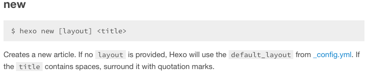
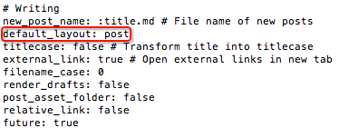
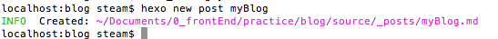
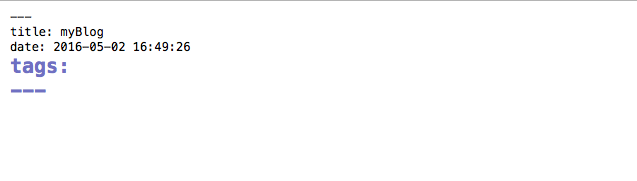
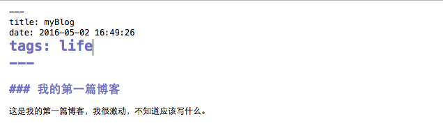
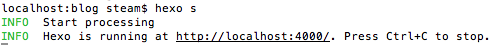
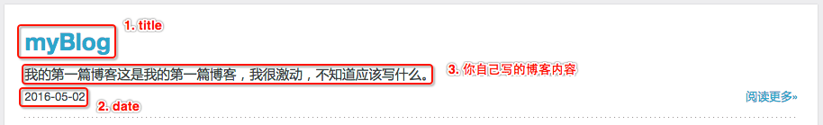
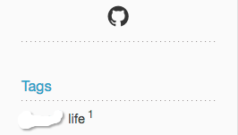
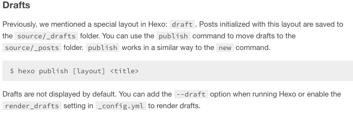

[hexo]如何生成一篇新的post
如何生成一篇新的post
一.前言
接上一篇文章：《如何更换hexo主题、删除文章》。
前面两篇文章分别讲解了如何搭建hexo博客，以及如何更改主题删除文章，接下来就要开始我们的博客之旅了，如何生成一篇新的博客。
关于如何新建一篇博客，官网上有很详细和明确的说明：

将上面的话翻译一下就是：使用 hexo new [layout] <title> 命令来生成一篇文章，如果 layout 没有指明的话，hexo会使用_config.yml中 default_layout 的默认配置（通常情况下就是post）。如果 title包含空格的话，需要用引号括起来。
这句话有几个地方需要解释一下：
layout是什么？layout的意思是布局，hexo博客安装成功后，在默认的根部录下，有一个scaffolds文件夹，里面有个3个文件，分别是draft.md / page.md / post.md。这3个文件就是默认的 layout 。这三个布局分别会有什么样的作用和效果，我们会在后面的内容中进行详细说明。- 如果不提供layout的话，也可以生成博客，不过默认的layout是在 _config.yml 中的配置。一般情况下，如果没有更改过任何 _config.yml 中的内容的话，默认的 layout 是 post，如下图：
 - 如果
title包含空格的话，title需要用引号包裹起来。也就是意味着，如果title没有空格的话，可以不使用引号。
现在，我们根据上面的解释，举例来说明我们新生成一篇文章时应该如何执行命令。
假设我们想要写一篇名为 myBlog 的博客，如果输入完整的命令的话，应该是： hexo new post "myBlog"。但是因为默认情况下，我们的 layout 就是post，所以我们可以将 post 省略掉，写为 hexo new "myBlog" 。又因为我们的博客名字中没有空格，因此可以将省略号去掉，写为hexo new myBlog。这个命令已经是简化到不能再简化的命令了。而如果我们的博客名称是 my first blog，因为名称包含了空格，所以我们的命令就必须将博客名称包裹起来，也就是说最简化的命令就是 hexo new "my first blog" 。 这就是为什么很多网上的攻略说新生成一篇文章时用 hexo new <title> 的命令的原因，这个命令没错，但是只是大部分的情况，而不是完整的命令。
我们学习任何的工具或者语言，最好的学习方式就是看官方文档说明，而从最开始的时候一定要按照官方的文档说明进行操作，只有当我们熟悉了这些命令，并且能够了解这些命令产生的后果之后再进行简化操作。这样的学习和实践过程才能保证我们在学习和进步的道路上步步为营，到后期才会能够轻松攻城略池。
这也是为什么我需要把这么一个简单的命令进行如此详细讲解的原因。
言归正传，刚才的例子中，我们只说了 layout 是 post 的情况，那么很多朋友会问，如果 layout 不是post呢？默认情况下， layout 还有 draft 和 page 两种情况。也就是说，出去 title 是否包含空格的情况之外，我们新生成一篇文章的情况还有两种可能： hexo new draft myBlog 和 hexo new page myBlog 这两种情况。下面我会 就 layout 的三种情况，将生成一篇新的文章是不同的情况做详细的说明和讲解。
二. layout 为 post 的情况
还是以上面的情况为例，我们的命令是 hexo new post myBlog ，执行这个命令之后，你会发现命令行会有如下提示

它告诉你，在根目录的下的 source 文件夹中创建了一个 _post 文件夹，并且在内生成了一个myBlog.md的文件。打开对应的文件夹，你会发现myBlog.md的文件，这就是你新生成的文件。你可以通过某种支持markdown的编辑器打开这个文件，然后使用markdown格式的方法书写这篇博客。关于什么是markdown格式，以及如何编写markdown，还有哪些编辑器可以打开markdown并且进行书写markdown，这里不做说明，大家可以自行在网上搜索相关的内容，有很多，未来有时间的话我会就我自己使用markdown的情况写一篇总结，但是目前没有相关的文章。
好了，我们打开myBlog.md这个文件，会看到如下的情况：

title 和 date 一看就明白是什么意思，不用解释了。tags表示的是你可以对这篇文章设置标签，假设这篇博客是写你的日常生活的，你给它定义一个life的标签。tags下面有3道横线，这个不能删除，表示以下是正文部分。也就是说3道横线以上的部分不会在你的文章中得到体现，但是会在你的页面中对应产生相应的内容，我会在后面以截图的形式告诉大家上面三项分别对应什么。你的博客的具体内容其实就是写在这3道横线下面的。我们现在假设我们书写了以下内容：

保存myBlog.md文件之后，我们先看下我们的根目录，里面没有public这个文件夹，我们在命令行中执行 hexo g 命令，这个时候你会发现在根目录下会新产生一个public的文件夹，打开之后会有很多内容，这个hexo g是hexo generate命令的缩写，表示生成博客的意思。也就是这个命令的作用是将你刚才编写的myBlog.md文件生成了一个静态的html文件，还有一些其他的内容个配置，都生成在public文件夹中。了解了hexo g命令的作用之后。我们再执行 hexo s 这个命令：

终端中会有提示，hexo在4000端口运行，我们打开4000端口，可以看到以下内容：

点击“阅读更多”可以看到实际的你刚才写的内容的效果，大家自行打开就明白了markdown的效果和作用，这个不需要太多解释。
那么我们的tags设置的内容在哪里呢？怎么没有展示呢？我们在博客的主页中会找到一个tags的标题，下面会有你刚才设置的tags的效果，如下图：

因为我写这篇文章的时候使用的Tinnypp主题，因此，除了显示tags是life之外，还会显示目前 life 标签的文章只有一篇。
不同的主题，关于title 和 date 还有tags在主页上的表现形式是不同的。大家仔细找一下就能理解。
最后如果对这篇博客的效果满意的话，直接执行hexo d将这篇文章部署到github上，就可以让全世界有网络的人都可以看到你的文章了！
以上就是我们如何用post生成一篇博客的情况的详细说明。总结一下就是三步：
- 执行
hexo new post myBlog，在source/_post文件夹下生成一个 myBlog.md的文件。 - 编辑myBlog.md，书写自己的博客内容。
- 执行
hexo g生成静态页面；执行hexo s启动本地服务器预览效果；执行hexo d将文章部署到github实现真正的网络博客。
通常，我们大部分的文章都是通过上面这样的方式进行的，因此这也是为什么配置中默认的layout方式是post的原因。那么接下来我们也说一说，layout 为 draft和page的情况。
三. layout 为 draft 的情况
通过以上的学习，我们大概了解了一般情况下生成一篇博客的流程以及各个内容设置对页面效果的影响。那么我们现在学习一下 hexo new draft myDraftBlog 的情况。在没有执行这个命令之前，你可以去看下你的source文件夹，如果你是按照我之前的文章一步步进行的话，你会发现其中只有_post一个文件夹。
当我们执行上面的命令之后，类似post一样，我们同样会发现在根目录下source/_drafts文件夹中会出现一个myDraftBlog.md的文件。也就是说，_draft文件夹和里面的内容是你执行上述命令之后生成的。同样的，你开始编辑myDraftBlog.md文件，然后保存。
以此执行hexo g 和 hexo s 命令，打开4000端口之后你会发现，你完全看不到你刚才编辑的myDraftBlog这篇博客。这是为什么呢？因为layout 为 draft的时候，其实这个md文件是草稿状态，也就是说，这篇文章仅仅是作为你的草稿而不是正式稿，所以不会发表在博客主页上。草稿就是需要你不断完善的文章，知道有一天你觉得这篇文章可以正式发表了，那么如何才能将草稿发表成为正式稿件呢？官方文档其实有非常详细的说明：

上面的官方文档会告诉你，通过publish命令可以将draft移动到_post文件夹下，形成正式的博客。也就是说，当你认为你的草稿已经完善到可以发表的状态时，执行hexo publish draft myDraftBlog.md，你就会发现，source/_draft文件夹下的myDraftBlog.md文件消失了，而在_post文件夹下你会找到myDraftBlog.md文件。这个时候再按照生成post文件的方式，依次执行hexo g hexo d 就可以将这篇草稿正式转为发表在网上的博客了。
因此，draft都是草稿，需要和publish命令配合使用。
当然，根据上面的官网说明，如果我们一定要查看我们的草稿，我们可以使用hexo g --draft， hexo s --draft命令来在本地预览我们的草稿效果。
四. layout 为 page 的情况
通过对上面layout 情况为 post和 draft的阐释，大家应该会对layout大概会有个了解了。那么layout为page的时候到底会发生什么呢？我们尝试一下下面这个命令hexo new page "about"，这个时候你打开source文件夹你会发现一个about的文件夹，里面会有一个index.md的文件。编辑index.md文件，像之前post和draft的情况一样，我们在其中输入一些测试的内容，然后依次执行hexo g，运行hexo s。打开4000端口之后，你会发现你依然看不到你刚才编辑的index.md的内容。那么这部分的内容到底在哪里呢？如何才能看到呢？我们将url增加‘/about’的内容，也就是说把url改为’http://localhost:4000/about'，然后回车。这个时候你就会发现你刚才编辑的index.md的内容就会出现在这里。其实，在你执行`hexo g命令的时候，已经将index.md文件的内容生成在了public文件夹下面，你去public文件夹中寻找，会发现一个about文件夹，这个about文件夹下有一个index.html文件。一般情况下，如果一个page下面没有输入具体的文件名的话，就会打开这个文件夹下的index.html文件。那么也就是是说，这个时候你去source/about文件夹下再去新建一个myPageIntroduction.md的文件，编辑完之后执行hexo g和hexo s`,然后在地址栏输入url的内容为’http://localhost:4000/about/myPageIntroduction.html'就会看到你刚才编辑的myPageIntroduction.md的内容。这就是layout 为 page的时候的作用。其实就是相当于生成一个新的路径，也就是我们说的url的path，或者也可以称作路由。通过这种方式，我们可以把我们的博客再进行细分各个内容版块，更有条理的组织我们的博客。
关于layout为page的情况，官网似乎没有详细说明。所以上述关于page的内容是我自己的一个总结，这个似乎不能完全解释page的作用，但是仅仅从组织博客内容的版块来看，是可以应用和解释的。